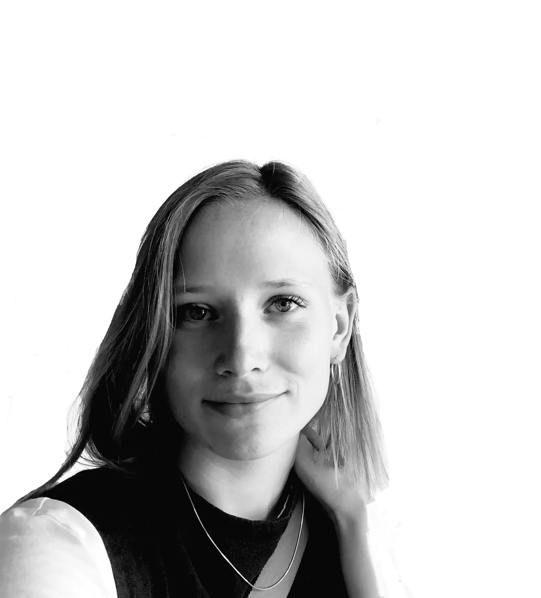

Om mig
I mit pas står der Anna Kirstine, men jeg hedder nu bare Kirstine. Jeg er 23 og bor pt på Amgerbro. Jeg elsker musik, bøger, grafisk design og så er jeg ofte til at finde på en klatrevæg i sydhavnen. Jeg er ved at uddanne mig til multimediedesigner, fordi jeg er bidt af det kreative og gerne vil udfolde den side af mig selv.